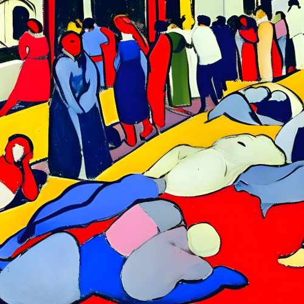
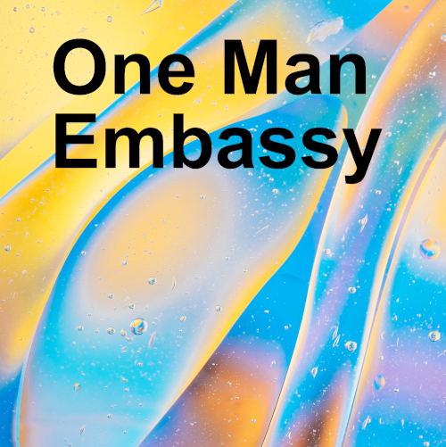
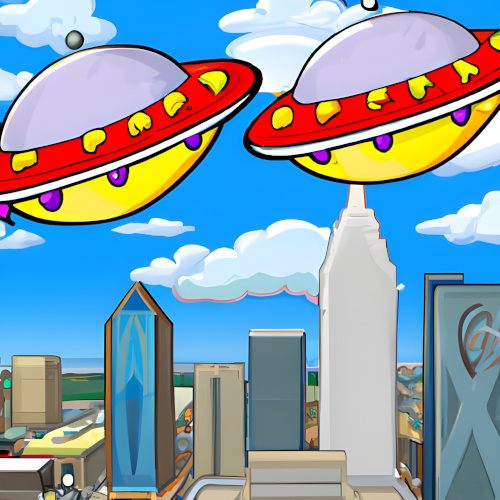
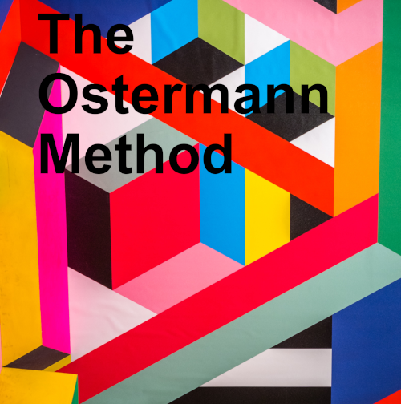
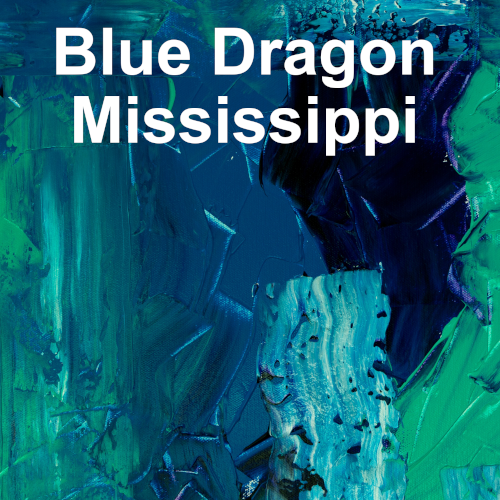

Creator of the RSTORY token and author of 10 visionary science fiction books. Mark’s work explores emerging tech, myth, and consciousness — shared through a decentralized creative economy.

Hi, I'm Mark Bailey. My digital media products form the initial basis for the value of the RSTORY token. But RSTORY wasn’t created just to distribute my science fiction. It was created to make it easy for anyone to publish their own digital media in a decentralized and censorship-resistant way.
If you have powerful content you'd like to share exclusively through RSTORY, I’ll help you integrate the token into your site and provide you with free tokens to distribute or trade.
My books are short, dialogue-driven, and funny. They explore emerging technologies, non-ordinary states of consciousness, and modern mythology. I’ve spent 5 years writing these 10 volumes — each one explores the present and possible futures in unexpected ways.
I also publish the Free Mind Gazette on Substack and maintain a Hive blog. I live in Minneapolis and have worked as a news editor at WantToKnow.info since 2014.
Connect your wallet to access token-gated content. These works are available either freely, through token access, or in print/Kindle editions:
On the planet Mother, the average lifespan is 120 years. This story begins on Mother's Temperate Subcontinent, in the city of New Oro, on the campus of the archivists. There, while Motherling archivists observe Earthlings across the galaxy using special technology, something happens that threatens to upend the balance of power on their distant utopian world.
The Brockton Exodus is available for a limited time as a free web book. This is an uncorrected proof released in advance of publication later in 2025.
A man travels back in time to the day before 9/11. Once there, he meets up with his younger self. Together, using information and technology from the future, they try to improve society. Their most ambitious goal is changing the outcome of the US 2016 Democratic Primary. Along the way, powerful future technology falls into the wrong hands, with unexpected results.
Small Gods of Time Travel is available as a free web book (IPFS mirror). Each of this book's 40 chapters corresponds with a Tezos NFT available on Objkt.

A national tragedy claims as many lives as 9/11 did. From there, the story follows a handful of characters as they try to navigate the post-tragedy landscape. Although they face steep challenges, synchronicities and the magic of human connections help them find their way.
Politics, media, harm reduction, and non-ordinary states of consciousness are some of the themes explored in this novel.
It begins in Brooklyn. The Fairie Queen sends a pair of hipsters on a grand quest that ends in another world. In this other world, the guardian of the passage to Earth faces hard choices after learning troubling information about his predecessor. Then a billionaire's pet project upends this world's traditional society.
The pitfalls of hidden politics are uncovered through dark humor and casual intrigue.
The Paradise Anomaly is available in print via Blurb and for Kindle on Amazon. If you possess at least one RSTORY token, you may read the PDF here.

Forced to flee his home planet Jhanya during a violent revolution, Hequa steals a spaceship and makes his way to Earth. Here, on an unfamiliar world with alien customs, he tries to make a life for himself.
Aided by technology from Jhanya and hindered by the absence of identity documents, Hequa finds work as a panhandler, a stage magician, and a manufacturer of rare items. Eventually, he opens the Jhanya Embassy, where he shares the wonders of his home planet with the people of Earth.
One Man Embassy is available in print via Blurb and for Kindle on Amazon. If you possess at least one RSTORY token, you may read the PDF here.

On the planet Jhanya, the destruction of a space station is blamed on a revolutionary named Hequa. When Hequa flees Jhanya for Earth, Lika the assassin is sent after him. On Earth, Lika pursues her target while learning to navigate the new planet's strange customs.
She eventually makes some friends, finds a job washing dishes, and comes to realize that she may have been lied to by her government.
Flying Saucer Shenanigans is available in print via Blurb and for Kindle on Amazon. If you possess at least one RSTORY token, you may read the PDF here.
A Lagu is an ancient and magical medium-sized mammal. When one of these strange creatures is accidentally seen by a human boy named Luke, everything changes.
Traha is a sentient tree from a planet 23 light years away. When her one-way journey to Earth is completed with the help of a sorcerer named Taavi, everything changes.
The blue man is many things. A safe driver. An inspiration. A lover of root beer floats. When the blue man surprises a woman named Nneka at a shopping mall, everything changes.
These intertwined tales unfold in circumstances where magical creatures, telepathy, a revolutionary new currency, and a mysteriously powerful dance come together in unlikely ways. Through it all, the everyday world is transformed into someplace unfamiliar, and the reader is left questioning everything but the value of friendship.
Rainbow Lullaby is available in print via Blurb and for Kindle on Amazon. If you possess at least one RSTORY token, you may read the PDF here.

A former spy tells the story of his clandestine career. A network of sorcerers attempt to influence the stock market using hypnosis. An act of terrorism provokes unsettling questions. And the murder of a bartender in Chicago threatens to transform a secret war into something entirely unexpected.
The Ostermann Method is available in print via Blurb and for Kindle on Amazon. If you possess at least one RSTORY token, you may read the PDF here.

Pikwik the blue dragon has lived in the Mississippi River for thousands of years. Like all blue dragons, Pikwik's life is enriched by her psychic communications with the people in her territory.
When Pikwik realizes that fascists are beginning to take over, she chooses a young woman named Matilda to champion an anti-fascist resistance movement. With Pikwik's help, Matilda finds support in an ex-magician, an alien from another planet, and various other unusual characters.
They might not have much in common, but they all agree that fascism sucks. And sometimes that's enough.
Blue Dragon Mississippi is available in print via Blurb and for Kindle on Amazon. If you possess at least one RSTORY token, you may read the PDF here.
An English wizard and an extraterrestrial combine magic with science to create a new drug that makes people telepathic. This has immediate consequences for a crypto enthusiast and his friends. It also reshapes society in unexpected ways.
Fifty years in the future, an adventurous young woman embarks on a quest to uncover the secrets of the mysterious wizard who started it all.
Psychic Avalanche is available in print via Blurb and for Kindle on Amazon. If you possess at least one RSTORY token, you may read the PDF here.